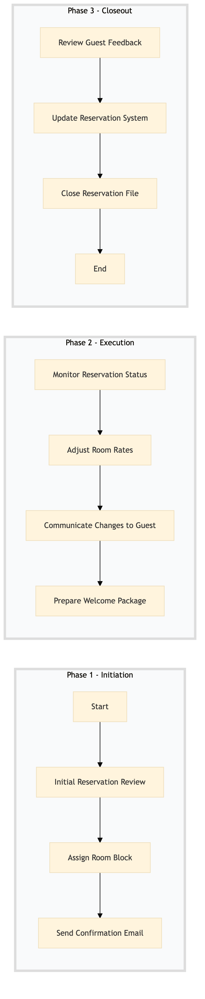

| Role | Steps |
|---|---|
| Revenue Manager | 1.1 1.2 1.3 2.1 2.2 2.3 3.1 3.2 3.3 |
| Front Desk Agent | 2.4 |
| Step | Name | Role | System | Input | Output | KPI | Dec? | Exc? | Pain Point / Risk |
|---|---|---|---|---|---|---|---|---|---|
| 1.1 | Initial Reservation Review | Revenue Manager | Oracle OPERA Cloud | Reservation details from SynXis CRS | Confirmed reservation in Oracle OPERA Cloud | Less than 5 minutes per reservation review | N | Y | Handling last-minute changes or cancellations |
| 1.2 | Assign Room Block | Revenue Manager | Oracle OPERA Cloud | Confirmed reservation details | Room block assigned in Oracle OPERA Cloud | Less than 3 minutes per room block assignment | N | Y | Ensuring optimal room utilization |
| 1.3 | Send Confirmation Email | Revenue Manager | Oracle OPERA Cloud, Book4Time | Room block details | Confirmation email sent to guest | Less than 2 minutes per confirmation email | N | Y | Ensuring timely and accurate communication |
| 2.1 | Monitor Reservation Status | Revenue Manager | Oracle OPERA Cloud, IDeaS G3 RMS | Room block status updates | Reservation status report | Daily review within 1 hour of midnight | Y | Y | Handling unexpected cancellations or no-shows |
| 2.2 | Adjust Room Rates | Revenue Manager | IDeaS G3 RMS, Oracle OPERA Cloud | Reservation status report | Updated room rates in Oracle OPERA Cloud | Less than 10 minutes per rate adjustment | Y | Y | Balancing revenue optimization and guest satisfaction |
| 2.3 | Communicate Changes to Guest | Revenue Manager | Oracle OPERA Cloud, Book4Time | Updated room rates | Change communication email sent to guest | Less than 3 minutes per change communication | N | Y | Maintaining positive guest relations |
| 2.4 | Prepare Welcome Package | Front Desk Agent | Oracle OPERA Cloud, Birchstreet Procurement | Guest check-in details | Welcome package prepared and delivered to guest room | Less than 10 minutes per welcome package preparation | N | Y | Ensuring timely delivery of amenities |
| 3.1 | Review Guest Feedback | Revenue Manager | Oracle OPERA Cloud, Marriott Bonvoy CRM | Guest feedback from check-out survey | Feedback analysis report | Within 24 hours of guest departure | Y | Y | Improving service based on guest feedback |
| 3.2 | Update Reservation System | Revenue Manager | Oracle OPERA Cloud, IDeaS G3 RMS | Feedback analysis report | Updated reservation system with improvements | Less than 1 hour per update | N | Y | Implementing changes efficiently |
| 3.3 | Close Reservation File | Revenue Manager | Oracle OPERA Cloud | Final reservation details and feedback | Closed reservation file in Oracle OPERA Cloud | Within 24 hours of guest departure | N | Y | Ensuring all documentation is complete |
Managing long-stay and extended stay reservations at a Marriott full-service hotel involves coordinating with guests to ensure their comfort and satisfaction while optimizing revenue.